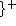
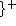

Next: 5.7.6 Context Declaration Example
Up: 5.7 Block Compilation
Previous: 5.7.4 Practical Difficulties
CMU Common Lisp has a context-sensitive declaration mechanism which is useful
because it allows flexible control of the compilation policy in large
systems without requiring changes to the source files. The primary
use of this feature is to allow the exported interfaces of a system to
be compiled more safely than the system internals. The context used
is the name being defined and the kind of definition (function, macro,
etc.)
The :context-declarations option to with-compilation-unit (page  ) has
dynamic scope, affecting all compilation done during the evaluation of the
body. The argument to this option should evaluate to a list of lists of the
form:
) has
dynamic scope, affecting all compilation done during the evaluation of the
body. The argument to this option should evaluate to a list of lists of the
form:
(context-spec  declare-form)
declare-form)
In the indicated context, the specified declare forms are inserted at
the head of each definition. The declare forms for all contexts that
match are appended together, with earlier declarations getting
precedence over later ones. A simple example:
:context-declarations
'((:external (declare (optimize (safety 2)))))
This will cause all functions that are named by external symbols to be
compiled with safety 2.
The full syntax of context specs is:
- :internal, :external
- True if the symbol is internal
(external) in its home package.
- :uninterned
- True if the symbol has no home package.
- (:package package-name
 )
)
- True if the
symbol's home package is in any of the named packages (false if
uninterned.)
- :anonymous
- True if the function doesn't have any
interesting name (not defmacro, defun, labels
or flet).
- :macro, :function
- :macro is a global
(defmacro) macro. :function is anything else.
- :local, :global
- :local is a labels or
flet. :global is anything else.
- (:or context-spec)
- True when any
supplied context-spec is true.
- (:and context-spec)
- True only when all
supplied context-specs are true.
- (:not context-spec)
- True when
context-spec is false.
- (:member name)
- True when the defined
name is one of these names (equal test.)
- (:match pattern)
- True when any of the
patterns is a substring of the name. The name is wrapped with
$'s, so ``$FOO'' matches names beginning with
``FOO'', etc.
Next: 5.7.6 Context Declaration Example
Up: 5.7 Block Compilation
Previous: 5.7.4 Practical Difficulties
Raymond Toy
Mon Sep 22 16:34:07 EDT 1997